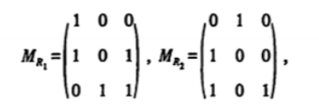
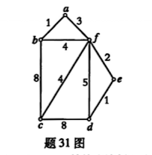

题干与选项默认显示，点开才能看到答案与解析，先自测再核对。
单选 15×2 = 30分填空 10×2 = 20分简答 7×5 = 35分证明 3×5 = 15分| P | Q | R | P∧Q | ¬R | P→¬R | (P∧Q)∨(P→¬R) |
|---|---|---|---|---|---|---|
| 0 | 0 | 0 | 0 | 1 | 1 | 1 |
| 0 | 0 | 1 | 0 | 0 | 1 | 1 |
| 0 | 1 | 0 | 0 | 1 | 1 | 1 |
| 0 | 1 | 1 | 0 | 0 | 1 | 1 |
| 1 | 0 | 0 | 0 | 1 | 1 | 1 |
| 1 | 0 | 1 | 0 | 0 | 0 | 0 |
| 1 | 1 | 0 | 1 | 1 | 1 | 1 |
| 1 | 1 | 1 | 1 | 0 | 0 | 1 |


| 序号 | 公式 | 根据 |
|---|---|---|
| 1 | R | 附加前提（CP） |
| 2 | P∧R | 前提引入 |
| 3 | P | 2 化简律（合取消除） |
| 4 | P→¬Q | 前提引入 |
| 5 | ¬Q | 3、4 假言推理（MP） |
| 6 | Q∨S | 前提引入 |
| 7 | S | 5、6 析取三段论 |
| 8 | R→S | 1、7 CP 规则 |
| 题号 | 1 | 2 | 3 | 4 | 5 | 6 | 7 | 8 | 9 | 10 | 11 | 12 | 13 | 14 | 15 |
|---|---|---|---|---|---|---|---|---|---|---|---|---|---|---|---|
| 答案 | B | C | D | A | A | D | A | C | A | C | B | C | D | B | B |